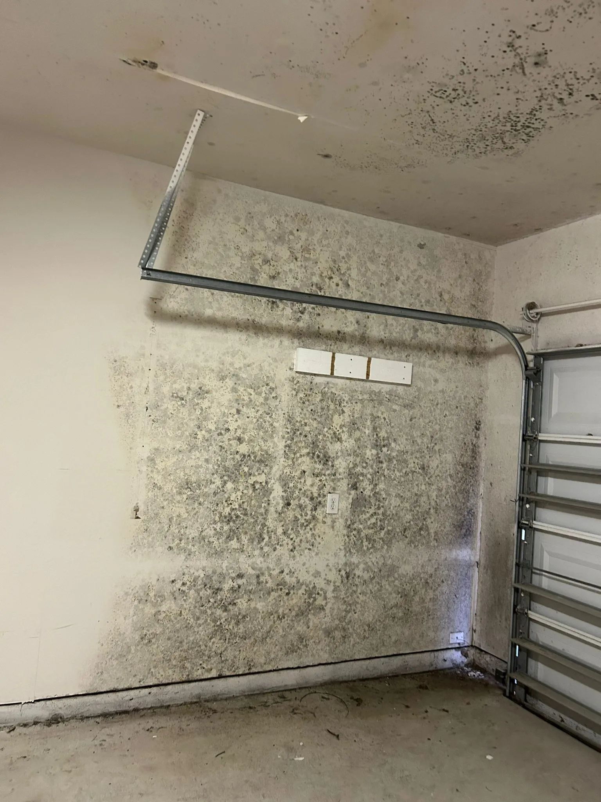
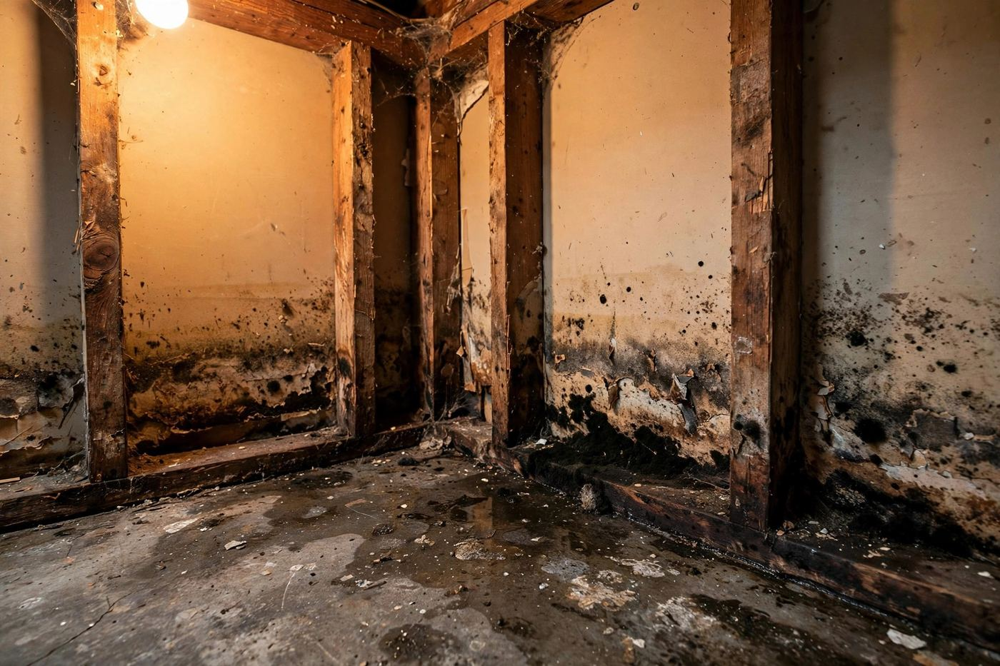

Average Cost of Mold Remediation in Meridian: 2026 Price Guide
Most professional mold remediation jobs in the United States cost between $1,200 and $3,750, with a national average around $2,300. Contractors usually price the work at $10 to $25 per square foot of affected area.
- $1,200 to $3,750 typical job
- $10 to $25 per square foot
- National figures — no Meridian-only price exists

The short answer
Most professional mold remediation jobs in the United States cost between $1,200 and $3,750, with a national average around $2,300. Contractors usually price the work at $10 to $25 per square foot of affected area.
Those are national published figures (HomeAdvisor, June 2026; This Old House, March 2026), not a quote for your house and not a Meridian-only price — no Meridian-specific price list is published anywhere. Your final cost comes down to the same three things it comes down to anywhere in the Treasure Valley: how much area is affected, where the mold is growing, and how much material has to come out. A small bathroom patch in a Meridian home and a whole-house job are not the same project, and they should not be priced like one.
Not sure which range fits your house? Call (321) 985-3339 and tell us where the mold is and roughly how big the area is. We will tell you honestly whether it sounds like a small job or one that needs a full assessment.
Not sure which range fits your house? Tell us where the mold is and roughly how big the area is, and we will tell you honestly whether it sounds like a small job or one that needs a full assessment.
Cost by job size
| Job size | Typical range |
|---|---|
| Small patch (under about 10 square feet) | $500 to $1,500 |
| Typical contained job (one room or area) | $1,200 to $3,750 |
| Large or whole-house remediation | $10,000 to $30,000 |
Small jobs often cost more per square foot than large ones, because most contractors apply a minimum job charge no matter how small the area is. The per-square-foot rate is most useful for mid-size and large areas, not for a single patch.
Cost by location in the home
Where the mold is growing matters as much as how much of it there is. These ranges come from Angi’s cost data as reported by This Old House:
| Location | Typical range |
|---|---|
| Bathroom | $500 to $1,000 |
| Basement | $500 to $3,000 |
| Crawl space | $500 to $2,000 |
| Attic | $1,000 to $4,000 |
| HVAC system and ductwork | $3,000 to $10,000 |
| Whole house | $10,000 to $30,000 |
Bathrooms usually cost less because the mold sits on visible, non-porous surfaces like tile and grout. Basements swing widely: mold on exposed concrete costs less than mold that has spread into framing, insulation, or stored belongings. HVAC jobs cost more because the system moves air through the whole house, so containment and cleaning get bigger.

What the per-square-foot rate means in practice
At $10 to $25 per square foot of affected area, the math looks like this:
| Affected area | Remediation only, before rebuild |
|---|---|
| 50 square feet | $500 to $1,250 |
| 100 square feet | $1,000 to $2,500 |
| 500 square feet | $5,000 to $12,500 |
That is simple multiplication from the published rate, and it covers containment, removal, HEPA filtration, and cleaning. It usually does not cover rebuilding. Jobs involving wall cavities, confined spaces, or hazardous species can run $15 to $30 per square foot.
What pushes the price up or down in Meridian
Meridian homes are priced like Boise homes — same valley, same contractors, same cost drivers. What changes the number is the house, not the ZIP code:
| Factor | How it moves the price |
|---|---|
| Size of the affected area | The biggest driver. More area means more containment, labor, and disposal. |
| Location and access | Attics, crawl spaces, and wall cavities cost more than open, reachable surfaces. |
| Material that must be removed | Drywall, insulation, and carpet pad that have grown mold usually come out. Framing that stays gets cleaned. |
| Containment and HEPA filtration | Sealed work areas and negative air pressure protect the rest of the house, and they add labor and equipment. |
| Moisture source repair | The leak has to be fixed, or the mold comes back. Plumbing repair is often a separate line. |
| Mold type | Growth that needs higher-grade protection and sealed waste handling costs more. |
| Testing and clearance | Inspection and lab testing are usually priced separately (see below). |
The most common Meridian pattern is the slow leak nobody notices: a supply line, a drain, or an appliance hose that has been dripping inside a wall or under a floor for weeks. By the time the smell or the stain shows up, the affected area is bigger than the visible patch — and the visible patch is what most homeowners try to price from.
What is usually not in the remediation quote
A remediation quote typically stops at clean, dry, verified framing. These items are often separate, so ask about each one before you agree to anything:
- Inspection: about $200 to $600 for a standard home inspection, more for large homes.
- Testing: basic mold testing runs about $250 to $350; comprehensive testing with lab analysis runs about $450 to $800.
- Rebuild: replacing drywall, flooring, carpet, and trim after clearance. HomeAdvisor lists drywall repair or replacement at about $1,000 to $2,900.
- Plumbing or leak repair: fixing the source of the water.
- Contents cleaning: furniture, clothing, and stored items.
If a quote looks far cheaper than the ranges above, check what it leaves out first. A low number that skips containment, HEPA filtration, or clearance testing is not the same job at a better price — it is a smaller job.
When a small job is not a small job
The EPA’s own line is the one to use: if the moldy area is less than about 10 square feet (less than roughly a 3 ft. by 3 ft. patch), in most cases, you can handle the job yourself — and size is only one factor among several (EPA, Mold Cleanup in Your Home). Call a professional when the patch is bigger than that, when the mold is on insulation, drywall, or framing rather than a hard surface you can scrub, when you can smell it but cannot see where it is, or when it came from a leak, a flood, or sewage.
Hidden growth is the reason Meridian jobs surprise people. Mold behind drywall, under flooring, or inside a wall cavity does not show its full size until the wall is open. A reputable contractor prices the visible job, explains what could change once materials come out, and tells you before the number moves — not after.
Does homeowners insurance help with the cost?
Sometimes — it depends on what caused the water, not on the mold itself. Sudden, accidental water damage (a burst pipe, for example) is often covered; long-term leaks, neglect, and flood water usually are not, and many policies cap mold coverage. The full Idaho picture — covered causes, sublimits, the claim steps, and what to do if a claim is denied — is in the companion guide: Does Homeowners Insurance Cover Mold in Idaho?. Read that before you call your insurer, so you know which questions to ask.
How to get a straight answer on your house
Three questions separate a clear quote from a vague one:
- What is included? Containment, removal, HEPA filtration, cleaning, and clearance testing should each be named — or named as excluded.
- What could change the price? Ask what happens if the affected area turns out bigger once drywall comes out.
- What is separate? Inspection, testing, leak repair, and rebuild are usually separate lines. Get each one in writing.
Get the answers in writing, and compare quotes on the same scope. Two quotes for different scopes cannot be compared on price alone.
Conclusion
For most Meridian homes, professional mold remediation lands between $1,200 and $3,750, at roughly $10 to $25 per square foot — the same national published ranges as Boise, because the work is priced by size, location, and what has to come out, not by city. Small patches run $500 to $1,500, whole-house jobs run $10,000 to $30,000, and inspection, testing, leak repair, and rebuild are usually separate. The number that matters is the one for your house, on a written scope, after someone has seen the affected area — not the average, and not the cheapest quote that leaves half the job out.
Call (321) 985-3339. Tell us where the mold is and roughly how big the area is, and we will tell you honestly whether it sounds like a small job or one that needs a full assessment.
Common questions
How much does mold remediation cost in Meridian on average?
National published figures put the average around $2,300, with most jobs between $1,200 and $3,750 (HomeAdvisor, June 2026). No Meridian-specific price list is published; Meridian jobs are priced the same way as Boise jobs, by affected area and location in the home.
What is the cost per square foot?
Contractors usually price remediation at $10 to $25 per square foot of affected area. Jobs involving wall cavities, confined spaces, or hazardous species can run $15 to $30 per square foot.
Is a small patch cheaper to fix myself?
If the moldy area is less than about 10 square feet, the EPA says you can usually handle it yourself — but only if it is on a hard surface, you can find and fix the moisture source, and no one in the home has health concerns that argue for a professional. Anything bigger, hidden, or leak-related belongs to a professional.
Why do two quotes for the same house differ so much?
Usually scope, not price. One quote may include containment, HEPA filtration, and clearance testing while the other leaves them out — or one may include rebuild while the other stops at clean framing. Compare the written scope line by line.
Does insurance cover mold remediation in Meridian?
It depends on the cause of the water. Sudden, accidental damage is often covered; long-term leaks and flood water usually are not, and many Idaho policies cap mold coverage. See the full Idaho insurance guide linked above.
Do I need mold testing before remediation?
Not always. Testing is most useful when the mold is hidden, when someone in the home has health concerns, or when you need clearance proof after the job. Basic testing runs about $250 to $350; comprehensive testing with lab analysis runs about $450 to $800.